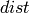
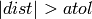
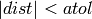

2. formex — Formex algebra in Python¶
Formex algebra in Python
This module is a Python implementation of most functions of Formex algebra. It forms the basis of pyFormex, but predates it and is fairly independent. Therefore, it can also be used as a standalone extension module in Python.
- class formex.Formex(data=[], prop=None, eltype=None)¶
A Formex is a numpy array of order 3 (axes 0,1,2) and type Float. A scalar element represents a coordinate (F:uniple).
A row along the axis 2 is a set of coordinates and represents a point (node, vertex, F: signet). For simplicity’s sake, the current implementation only deals with points in a 3-dimensional space. This means that the length of axis 2 is always 3. The user can create formices (plural of Formex) in a 2-D space, but internally these will be stored with 3 coordinates, by adding a third value 0. All operations work with 3-D coordinate sets. However, a method exists to extract only a limited set of coordinates from the results, permitting to return to a 2-D environment
A plane along the axes 2 and 1 is a set of points (F: cantle). This can be thought of as a geometrical shape (2 points form a line segment, 3 points make a triangle, ...) or as an element in FE terms. But it really is up to the user as to how this set of points is to be interpreted.
Finally, the whole Formex represents a set of such elements.
Additionally, a Formex may have a property set, which is an 1-D array of integers. The length of the array is equal to the length of axis 0 of the Formex data (i.e. the number of elements in the Formex). Thus, a single integer value may be attributed to each element. It is up to the user to define the use of this integer (e.g. it could be an index in a table of element property records). If a property set is defined, it will be copied together with the Formex data whenever copies of the Formex (or parts thereof) are made. Properties can be specified at creation time, and they can be set, modified or deleted at any time. Of course, the properties that are copied in an operation are those that exist at the time of performing the operation.
Methods
Create a new Formex.
The Formex data can be initialized by another Formex, by a 2D or 3D coordinate list, or by a string to be used in the pattern function to create a coordinate list. If 2D coordinates are given, a 3-rd coordinate 0.0 is added. Internally, Formices always work with 3D coordinates. Thus: F = Formex([[[1,0],[0,1]],[[0,1],[1,2]]]) creates a Formex with two elements, each having 2 points in the global z-plane.
If a prop argument is specified, the setProp() function will be called to assign the properties.
Methods
Formex objects have the following methods:
- setCoords(coords)¶
- Replace the current coords with new ones.
- element(i)¶
- Return element i of the Formex
- point(i, j)¶
- Return point j of element i
- coord(i, j, k)¶
- Return coord k of point j of element i
- nelems()¶
- Return the number of elements in the formex.
- nplex()¶
Return the number of points per element.
Examples:
1: unconnected points, 2: straight line elements, 3: triangles or quadratic line elements, 4: tetraeders or quadrilaterals or cubic line elements.
- ndim()¶
Return the number of dimensions.
This is the number of coordinates for each point. In the current implementation this is always 3, though you can define 2D Formices by given only two coordinates: the third will automatically be set to zero.
- npoints()¶
Return the number of points in the formex.
This is the product of the number of elements in the formex with the number of nodes per element.
- shape()¶
Return the shape of the Formex.
The shape of a Formex is the shape of its data array, i.e. a tuple (nelems, nplex, ndim).
- view()¶
Return the Formex coordinates as a numpy array (ndarray).
Since the ndarray object has a method view() returning a view on the ndarray, this method allows writing code that works with both Formex and ndarray instances. The results is always an ndarray.
- getProp(index=None)¶
- Return the propertie numbers of the element in index
- maxProp()¶
- Return the highest property value used, or None
- propSet()¶
- Return a list with unique property values on this Formex.
- centroids()¶
Return the centroids of all elements of the Formex.
The centroid of an element is the point whose coordinates are the mean values of all points of the element. The return value is a Coords object with nelems points.
- fuse(repeat=True, nodesperbox=1, rtol=1.e-5, atol=None)¶
Return a tuple of nodal coordinates and element connectivity.
A tuple of two arrays is returned. The first is float array with the coordinates of the unique nodes of the Formex. The second is an integer array with the node numbers connected by each element. The elements come in the same order as they are in the Formex, but the order of the nodes is unspecified. By the way, the reverse operation of coords,elems = fuse(F) is accomplished by F = Formex(coords[elems])
There is a (very small) probability that two very close nodes are not equivalenced by this procedure. Use it multiple times with different parameters to check. You can also set the rtol /atol parameters to influence the equivalence checking of two points. The default settting for atol is rtol * self.dsize()
- toMesh(None)¶
Convert a Formex to a Mesh.
Converts a geometry in Formex model to the equivalent Mesh model. In the Mesh model, all points with nearly identical coordinates are fused into a single point, and elements are defined by a connectivity table with integers pointing to the corresponding vertex.
- info()¶
- Return formatted information about a Formex.
- classmethod point2str(clas, point)¶
- Return a string representation of a point
- classmethod element2str(clas, elem)¶
- Return a string representation of an element
- asFormex()¶
Return string representation of a Formex as in Formian.
Coordinates are separated by commas, points are separated by semicolons and grouped between brackets, elements are separated by commas and grouped between braces:
>>> F = Formex([[[1,0],[0,1]],[[0,1],[1,2]]]) >>> print(F) {[1.0,0.0,0.0; 0.0,1.0,0.0], [0.0,1.0,0.0; 1.0,2.0,0.0]}
- asFormexWithProp()¶
Return string representation as Formex with properties.
The string representation as done by asFormex() is followed by the words “with prop” and a list of the properties.
- asArray()¶
- Return string representation as a numpy array.
- classmethod setPrintFunction(clas, func)¶
Choose the default formatting for printing formices.
This sets how formices will be formatted by a print statement. Currently there are two available functions: asFormex, asArray. The user may create its own formatting method. This is a class method. It should be used asfollows: Formex.setPrintFunction(Formex.asArray).
- fprint(None)¶
- setProp(p=None)¶
Create or destroy the property array for the Formex.
A property array is a rank-1 integer array with dimension equal to the number of elements in the Formex (first dimension of data). You can specify a single value or a list/array of integer values. If the number of passed values is less than the number of elements, they wil be repeated. If you give more, they will be ignored.
If a value None is given, the properties are removed from the Formex.
- append(F)¶
Append the members of Formex F to this one.
This function changes the original one! Use __add__ if you want to get a copy with the sum. >>> F = Formex([[[1.0,1.0,1.0]]]) >>> G = F.append(F) >>> print(F) {[1.0,1.0,1.0], [1.0,1.0,1.0]}
- classmethod concatenate(clas, Flist)¶
Concatenate all formices in Flist.
This is a class method, not an instance method! >>> F = Formex([[[1,2,3]]],1) >>> print(Formex.concatenate([F,F,F])) {[1.0,2.0,3.0], [1.0,2.0,3.0], [1.0,2.0,3.0]}
Formex.concatenate([F,G,H]) is functionally equivalent with F+G+H. The latter is simpler to write for a list with a few elements. If the list becomes large, or the number of items in the list is not fixed, the concatenate method is easier (and faster). We made it a class method and not a global function, because that would interfere with NumPy’s own concatenate function.
- select(idx)¶
Return a Formex which holds only element with numbers in ids.
idx can be a single element number or a list of numbers or any other index mechanism accepted by numpy’s ndarray
- selectNodes(idx)¶
Return a Formex which holds only some nodes of the parent.
idx is a list of node numbers to select. Thus, if F is a plex 3 Formex representing triangles, the sides of the triangles are given by F.selectNodes([0,1]) + F.selectNodes([1,2]) + F.selectNodes([2,0]) The returned Formex inherits the property of its parent.
- points()¶
Return a Formex containing only the points.
This is obviously a Formex with plexitude 1. It holds the same data as the original Formex, but in another shape: the number of points per element is 1, and the number of elements is equal to the total number of points. The properties are not copied over, since they will usually not make any sense.
The vertices() method returns the same data, but as a Coords object.
- vertices()¶
Return the points of a Formex as a 2dim Coords object.
The return value holds the same coordinate data as the input Formex, but in another shape: (npoints,3).
The points() method returns the same data, but as a Formex.
- remove(F)¶
Return a Formex where the elements in F have been removed.
This is also the subtraction of the current Formex with F. Elements are only removed if they have the same nodes in the same order. This is a slow operation: for large structures, you should avoid it where possible.
- whereProp(val)¶
Return the numbers of the elements with property val.
val is either a single integer, or a list/array of integers. The return value is an array holding all the numbers of all the elements that have the property val, resp. one of the values in val.
If the Formex has no properties, a empty array is returned.
- withProp(val)¶
Return a Formex which holds only the elements with property val.
val is either a single integer, or a list/array of integers. The return value is a Formex holding all the elements that have the property val, resp. one of the values in val. The returned Formex inherits the matching properties.
If the Formex has no properties, a copy with all elements is returned.
- splitProp()¶
Partition a Formex according to its prop values.
Returns a dict with the prop values as keys and the corresponding partitions as values. Each value is a Formex instance. It the Formex has no props, an empty dict is returned.
- elbbox()¶
Return a Formex where each element is replaced by its bbox.
The returned Formex has two points for each element: two corners of the bbox.
- unique(rtol=1.e-4, atol=1.e-6)¶
Return a Formex which holds only the unique elements.
Two elements are considered equal when all its nodal coordinates are close. Two values are close if they are both small compared to atol or their difference divided by the second value is small compared to rtol. Two elements are not considered equal if one’s points are a permutation of the other’s.
- reverse()¶
Return a Formex where all elements have been reversed.
Reversing an element means reversing the order of its points. This is equivalent to self.selectNodes(range(self.nplex()-1,-1,-1))
- test(nodes='all', dir=0, min=None, max=None, atol=0.)¶
Flag elements having nodal coordinates between min and max.
This function is very convenient in clipping a Formex in a specified direction. It returns a 1D integer array flagging (with a value 1 or True) the elements having nodal coordinates in the required range. Use where(result) to get a list of element numbers passing the test. Or directly use clip() or cclip() to create the clipped Formex.
The test plane can be defined in two ways, depending on the value of dir. If dir == 0, 1 or 2, it specifies a global axis and min and max are the minimum and maximum values for the coordinates along that axis. Default is the 0 (or x) direction.
Else, dir should be compaitble with a (3,) shaped array and specifies the direction of the normal on the planes. In this case, min and max are points and should also evaluate to (3,) shaped arrays.
nodes specifies which nodes are taken into account in the comparisons. It should be one of the following: - a single (integer) point number (< the number of points in the Formex) - a list of point numbers - one of the special strings: ‘all’, ‘any’, ‘none’ The default (‘all’) will flag all the elements that have all their nodes between the planes x=min and x=max, i.e. the elements that fall completely between these planes. One of the two clipping planes may be left unspecified.
- clip(t)¶
Return a Formex with all the elements where t>0.
t should be a 1-D integer array with length equal to the number of elements of the formex. The resulting Formex will contain all elements where t > 0. This is a convenience function for the user, equivalent to F.select(t>0).
- cclip(t)¶
- This is the complement of clip, returning a Formex where t<=0.
- mirror(dir=2, pos=0, keep_orig=True)¶
Reflect a Formex in one of the coordinate directions
This method behaves like reflect(), but adds the reflected part to the original. Setting keep_orig=False makes it behave just like reflect().
- centered()¶
- Return a centered copy of the Formex.
- resized(size=1., tol=1.e-5)¶
Return a scaled copy of the Formex with given size in all directions.
If a direction has zero size, it is not rescaled.
- circulize(angle)¶
Transform a linear sector into a circular one.
A sector of the (0,1) plane with given angle, starting from the 0 axis, is transformed as follows: points on the sector borders remain in place. Points inside the sector are projected from the center on the circle through the intersection points of the sector border axes and the line through the point and perpendicular to the bisector of the angle. See Diamatic example.
- circulize1()¶
Transforms the first octant of the 0-1 plane into 1/6 of a circle.
Points on the 0-axis keep their position. Lines parallel to the 1-axis are transformed into circular arcs. The bisector of the first quadrant is transformed in a straight line at an angle Pi/6. This function is especially suited to create circular domains where all bars have nearly same length. See the Diamatic example.
- shrink(factor)¶
Shrinks each element with respect to its own center.
Each element is scaled with the given factor in a local coordinate system with origin at the element center. The element center is the mean of all its nodes. The shrink operation is typically used (with a factor around 0.9) in wireframe draw mode to show all elements disconnected. A factor above 1.0 will grow the elements.
- replic(n, step, dir=0)¶
Return a Formex with n replications in direction dir with step.
The original Formex is the first of the n replicas.
- replic2(n1, n2, t1=1.0, t2=1.0, d1=0, d2=1, bias=0, taper=0)¶
Replicate in two directions.
n1,n2 number of replications with steps t1,t2 in directions d1,d2 bias, taper : extra step and extra number of generations in direction d1 for each generation in direction d2
- rosette(n, angle, axis=2, point=[, 0., 0., 0.])¶
- Return a Formex with n rotational replications with angular step angle around an axis parallel with one of the coordinate axes going through the given point. axis is the number of the axis (0,1,2). point must be given as a list (or array) of three coordinates. The original Formex is the first of the n replicas.
- translatem(None)¶
Multiple subsequent translations in axis directions.
The argument list is a sequence of tuples (axis, step). Thus translatem((0,x),(2,z),(1,y)) is equivalent to translate([x,y,z]). This function is especially conveniant to translate in calculated directions.
- extrude(n, step=1., dir=0, autofix=True)¶
Extrude a Formex in one of the axis directions.
Returns a Formex with doubled plexitude.
First the original Formex is translated over n steps of length step in direction dir. Then each pair of subsequent Formices is connected to form a higher plexitude structure.
Currently, this function correctly transforms: point1 to line2, line2 to quad4, tri3 to wedge6, quad4 to hex8.
See the ‘connect’ function for a more versatile tool.
- divide(div)¶
Divide a plex-2 Formex at the values in div.
Replaces each member of the Formex by a sequence of members obtained by dividing the Formex at the relative values specified in div. The values should normally range from 0.0 to 1.0.
As a convenience, if an integer is specified for div, it is taken as a number of divisions for the interval [0..1].
This function only works on plex-2 Formices (line segments).
- intersectionWithPlane(p, n)¶
Return the intersection of a plex-2 Formex with the plane (p,n).
This is equivalent with the function intersectionWithPlane(F,p,n).
- intersectionPointsWithPlane(p, n)¶
Return the intersection points of a plex-2 Formex with plane (p,n).
This is equivalent with the function intersectionWithPlane(F,p,n), but returns a Formex instead of an array of points.
- intersectionLinesWithPlane(p, n)¶
Returns the intersection lines of a plex-3 Formex with plane (p,n).
This is equivalent with the function intersectionLinesWithPlane(F,p,n).
- cutWithPlane(p, n, side='', atol=None, newprops=None)¶
Cut a Formex with the plane(s) (p,n).
..warning :: This method currently only works for plexitude 2 or 3!
- F: a Formex of plexitude 2 or 3.
- p,`n`: a point and normal vector defining the cutting plane. In case of plexitude 3, p and n can be sequences of points and vector, allowing to cut with multiple planes. Both p and n have shape (3) or (npoints,3).
The default return value is a tuple of two Formices of the same plexitude as the input: (Fpos,Fneg), where Fpos is the part of the Formex at the positive side of the plane (as defined by the normal vector), and Fneg is the part at the negative side. Elements of the input Formex that are lying completely on one side of the plane will return unaltered. Elements that are crossing the plane will be cut and split up into multiple parts.
When with side = ‘+’ or ‘-‘ (or ‘positive’or ‘negative’), only one of the sides is returned.
The other arguments (atol,newprops) are currently specific for the plexitude. See the cut2AtPlane and cut3AtPlane, which hold the actual implementation of this method.
- cutAtPlane(p, n, newprops=None, side='+', atol=0.)¶
- split(n=1)¶
Split a Formex in subFormices containing n elements.
The number of elements in the Formex should be a multiple of n. Returns a list of Formices each comprising n elements.
- write(fil, sep=' ', mode='w')¶
Write a Formex to file.
If fil is a string, a file with that name is opened. Else fil should be an open file. The Formex is then written to that file in a native format, using sep as separator between the coordinates. If fil is a string, the file is closed prior to returning.
- classmethod read(clas, fil, sep=' ')¶
Read a Formex from file.
fil is a filename or a file object. If the file is in a valid Formex file format, the Formex is read and returned. Otherwise, None is returned. Valid Formex file formats are described in the manual.
- classmethod fromstring(clas, fil, sep=' ', nplex=1, ndim=3, count=1)¶
Create a Formex from coodinates in a string.
This uses the Coords.fromstring() method to read coordinates from a string and restructures them into a Formex of the specified plexitude.
- fil: a string containing a single sequence of float numbers separated
- by whitespace and a possible separator string.
- sep: the separator used between the coordinates. If not a space,
- all extra whitespace is ignored.
- ndim: number of coordinates per point. Should be 1, 2 or 3 (default).
- If 1, resp. 2, the coordinate string only holds x, resp. x,y values.
- count: total number of coordinates to read. This should be a multiple
- of 3. The default is to read all the coordinates in the string. count can be used to force an error condition if the string does not contain the expected number of values.
The return value is a Coords object.
- classmethod fromfile(clas, fil, sep=' ', nplex=1)¶
- Read the coordinates of a Formex from a file
- reverseElements()¶
- feModel(None)¶
Functions defined in the module formex
- formex.vectorLength(vec)¶
Return the lengths of a set of vectors.
vec is an (n,3) shaped array holding a collection of vectors. The result is an (n,) shaped array with the length of each vector.
- formex.vectorNormalize(vec)¶
Normalize a set of vectors.
vec is a (n,3) shaped arrays holding a collection of vectors. The result is a tuple of two arrays:
- length (n): the length of the vectors vec
- normal (n,3): unit-length vectors along vec.
- formex.vectorPairAreaNormals(vec1, vec2)¶
Compute area of and normals on parallellograms formed by vec1 and vec2.
vec1 and vec2 are (n,3) shaped arrays holding collections of vectors. The result is a tuple of two arrays: - area (n) : the area of the parallellogram formed by vec1 and vec2. - normal (n,3) : (normalized) vectors normal to each couple (vec1,2). These are calculated from the cross product of vec1 and vec2, which indeed gives area * normal.
Note that where two vectors are parallel, an area zero will results and an axis with components NaN.
- formex.vectorPairArea(vec1, vec2)¶
Compute area of the parallellogram formed by a vector pair vec1,vec2.
vec1 and vec2 are (n,3) shaped arrays holding collections of vectors. The result is an (n) shaped array with the area of the parallellograms formed by each pair of vectors (vec1,vec2).
- formex.vectorPairNormals(vec1, vec2)¶
Compute vectors normal to vec1 and vec2.
vec1 and vec2 are (n,3) shaped arrays holding collections of vectors. The result is an (n,3) shaped array of unit length vectors normal to each couple (edg1,edg2).
- formex.vectorTripleProduct(vec1, vec2, vec3)¶
Compute triple product vec1 . (vec2 x vec3).
vec1, vec2, vec3 are (n,3) shaped arrays holding collections of vectors. The result is a (n,) shaped array with the triple product of each set of corresponding vectors fromvec1,vec2,vec3. This is also the square of the volume of the parallellepid formex by the 3 vectors.
- formex.polygonNormals(x)¶
Compute normals in all points of polygons in x.
x is an (nel,nplex,3) coordinate array representing a (possibly not plane) polygon.
The return value is an (nel,nplex,3) array with the unit normals on the two edges ending in each point.
- formex.pattern(s)¶
Return a line segment pattern created from a string.
This function creates a list of line segments where all points lie on a regular grid with unit step. The first point of the list is [0,0,0]. Each character from the input string is interpreted as a code specifying how to move to the next point. Currently defined are the following codes: 0 = goto origin [0,0,0] 1..8 move in the x,y plane 9 remains at the same place When looking at the plane with the x-axis to the right, 1 = East, 2 = North, 3 = West, 4 = South, 5 = NE, 6 = NW, 7 = SW, 8 = SE. Adding 16 to the ordinal of the character causes an extra move of +1 in the z-direction. Adding 48 causes an extra move of -1. This means that ‘ABCDEFGHI’, resp. ‘abcdefghi’, correspond with ‘123456789’ with an extra z +/-= 1. This gives the following schema:
z+=1 z unchanged z -= 1 F B E 6 2 5 f b e | | | | | | C----I----A 3----9----1 c----i----a | | | | | | G D H 7 4 8 g d hThe special character ‘/’ can be put before any character to make the move without making a connection. The effect of any other character is undefined.
The resulting list is directly suited to initialize a Formex.
- formex.mpattern(s)¶
This is like pattern, but allowing lists with more than 2 points.
Subsequent points are included in the same list until a ‘-‘ occurs. A ‘-‘ character splits lists. Each list starts at the last point of the previous list. All lists should have equal length if you want to use the resulting list to initialize a Formex.
- formex.intersectionWithPlane(F, p, n)¶
Return the intersection of a Formex F with the plane (p,n).
The Formex should have plexitude 2. p is a point specified by 3 coordinates. n is the normal vector to a plane, specified by 3 components.
The return value is a [n] shaped array of parameter values t, such that for each segment L the intersection point is given by (1-t)*L[0]+ t*L[1].
- formex.pointsAt(F, t)¶
Return the points of a plex-2 Formex at times t.
F is a plex 2 Formex and t is an array with F.nelems() float values which are interpreted as local parameters along the edges of the Formex, such that the first node has value 0.0 and the last has vaue 1.0. The return value is a Coords array with the points at values t.
- formex.intersectionPointsWithPlane(F, p, n)¶
Return the intersection points of a Formex with plane p,n.
The Formex should have plexitude 2. p is a point specified by 3 coordinates. n is the normal vector to a plane, specified by 3 components.
The result is a plex-1 Formex with the same number of elements as the original. Some of the points may be NaN’s.
- formex.intersectionLinesWithPlane(F, p, n, atol=1.e-4)¶
Return the intersection lines of a plex-3 Formex with plane (p,n).
F is a Formex of plexitude 3. p is a point specified by 3 coordinates. n is the normal vector to a plane, specified by 3 components. atol is a tolerance factor defining whether an edge is intersected by the plane.
- formex.cut2AtPlane(F, p, n, side='', atol=None, newprops=None)¶
Returns all elements of the Formex cut at plane.
F is a Formex of plexitude 2. p is a point specified by 3 coordinates. n is the normal vector to a plane, specified by 3 components.
The return value is:
- with side = ‘+’ or ‘-‘ or ‘positive’or ‘negative’ : a Formex of the same plexitude with all elements located completely at the positive/negative side of the plane(s) (p,n) retained, all elements lying completely at the negative/positive side removed and the elements intersecting the plane(s) replaced by new elements filling up the parts at the positive/negative side.
- with side = ‘’: two Formices of the same plexitude, one representing the positive side and one representing the negative side.
To avoid roundoff errors and creation of very small elements, a tolerance can be specified. Points lying within the tolerance distance will be considered lying in the plane, and no cutting near these points.
- formex.cut3AtPlane(F, p, n, side='', atol=None, newprops=None)¶
Returns all elements of the Formex cut at plane(s).
F is a Formex of plexitude 3. p is a point or a list of points. n is the normal vector to a plane or a list of normal vectors. Both p and n have shape (3) or (npoints,3).
The return value is:
- with side = ‘+’ or ‘-‘ or ‘positive’or ‘negative’ : a Formex of the same plexitude with all elements located completely at the positive/negative side of the plane(s) (p,n) retained, all elements lying completely at the negative/positive side removed and the elements intersecting the plane(s) replaced by new elements filling up the parts at the positive/negative side.
- with side = ‘’: two Formices of the same plexitude, one representing the positive side and one representing the negative side.
Let  be the signed distance of the vertices to a plane. The elements located completely at the positive or negative side of a plane have three vertices for which . The elements intersecting a plane can have one or more vertices for which . These vertices are projected on the plane so that their distance is zero.
If the Formex has a property set, the new elements will get the property numbers defined in newprops. This is a list of 7 property numbers flagging elements with following properties:
- no vertices with , triangle after cut
- no vertices with , triangle 1 from quad after cut
- no vertices with , triangle 2 from quad after cut
- one vertex with , two vertices at pos. or neg. side
- one vertex with , one vertex at pos. side, one at neg.
- two vertices with , one vertex at pos. or neg. side
- three vertices with
- formex.cutElements3AtPlane(F, p, n, newprops=None, side='', atol=0.)¶
This function needs documentation.
Should it be called by the user? or only via cut3AtPlane? For now, lets suppose the last, so no need to check arguments here.
newprops should be a list of 7 values: each an integer or None side is either ‘+’, ‘-‘ or ‘’
- formex.connect(Flist, nodid=None, bias=None, loop=False)¶
Return a Formex which connects the formices in list.
Flist is a list of formices, nodid is an optional list of nod ids and bias is an optional list of element bias values. All lists should have the same length. The returned Formex has a plexitude equal to the number of formices in list. Each element of the Formex consist of a node from the corresponding element of each of the formices in list. By default this will be the first node of that element, but a nodid list may be given to specify the node id to be used for each of the formices. Finally, a list of bias values may be given to specify an offset in element number for the subsequent formices. If loop==False, the order of the Formex will be the minimum order of the formices in Flist, each minus its respective bias. By setting loop=True however, each Formex will loop around if its end is encountered, and the order of the result is the maximum order in Flist.
- formex.interpolate(F, G, div, swap=False)¶
Create interpolations between two formices.
F and G are two Formices with the same shape. v is a list of floating point values. The result is the concatenation of the interpolations of F and G at all the values in div. An interpolation of F and G at value v is a Formex H where each coordinate Hijk is obtained from: Hijk = Fijk + v * (Gijk-Fijk). Thus, a Formex interpolate(F,G,[0.,0.5,1.0]) will contain all elements of F and G and all elements with mean coordinates between those of F and G.
As a convenience, if an integer is specified for div, it is taken as a number of divisions for the interval [0..1]. Thus, interpolate(F,G,n) is equivalent with interpolate(F,G,arange(0,n+1)/float(n))
The swap argument sets the order of the elements in the resulting Formex. By default, if n interpolations are created of an m-element Formex, the element order is in-Formex first (n sequences of m elements). If swap==True, the order is swapped and you get m sequences of n interpolations.

Documentation
Previous topic
1. coords — A structured collection of 3D coordinates.
Next topic
3. arraytools — A collection of numerical array utilities.